For owners and senior executives
A-SSIST
Know what’s happening in your business.
Ask about team priorities, critical issues or business performance any time. A-SSIST brings the information you have access to into one app for iPhone and iPad.
Request a demo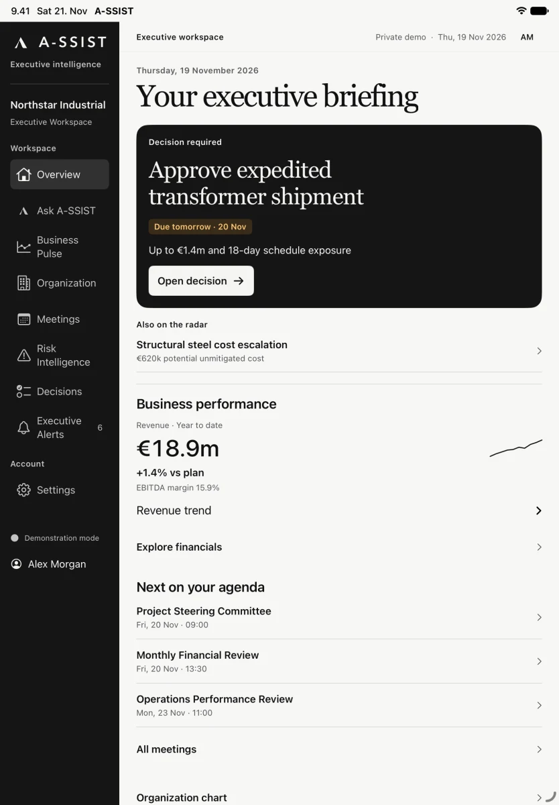
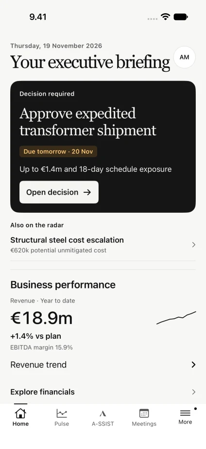
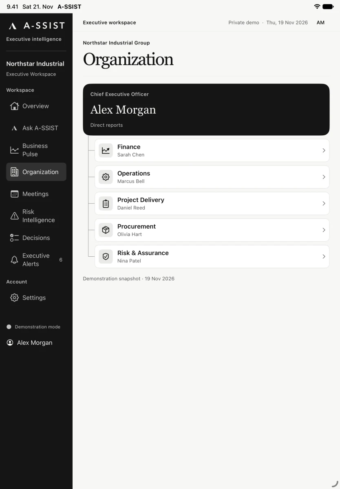
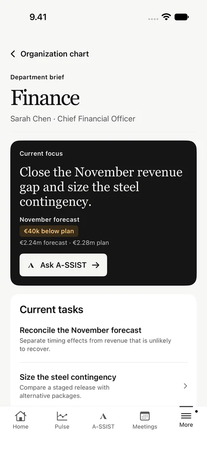
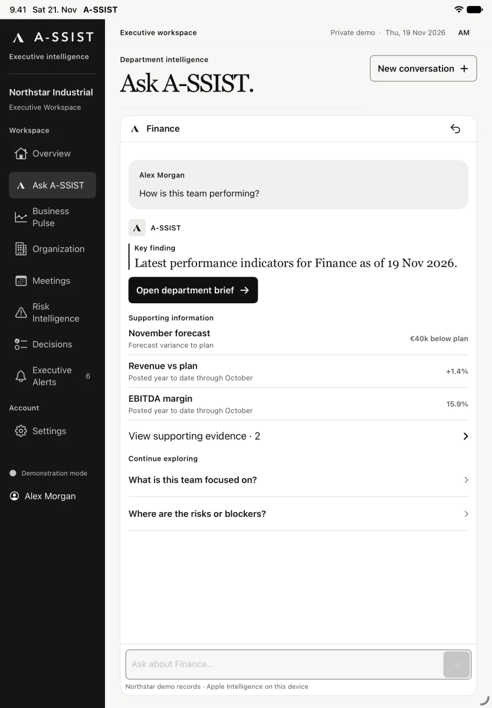
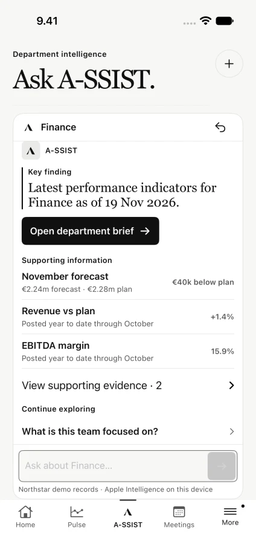
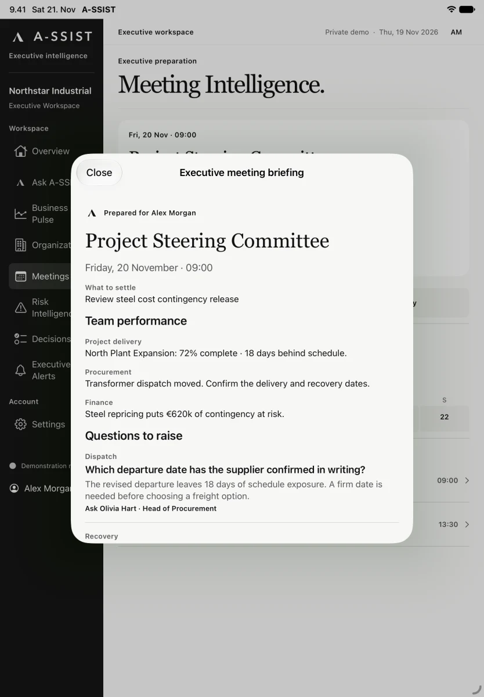
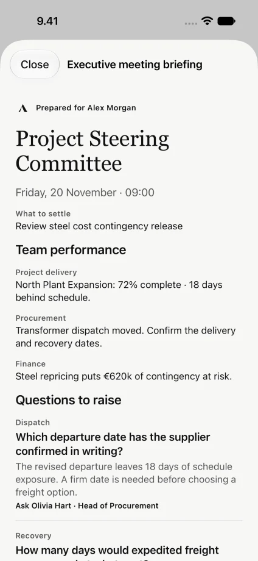
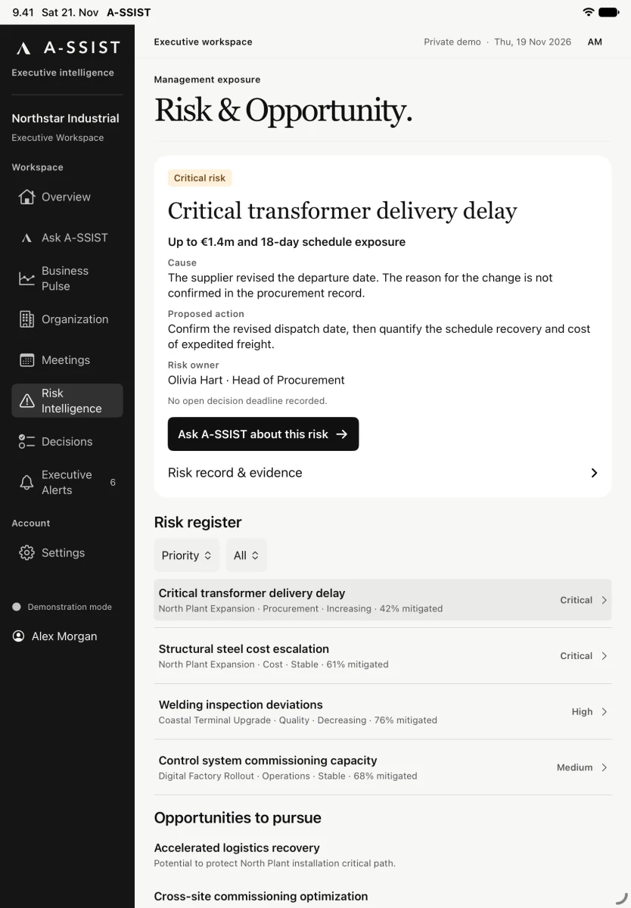
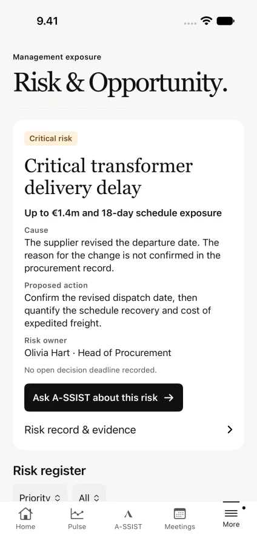
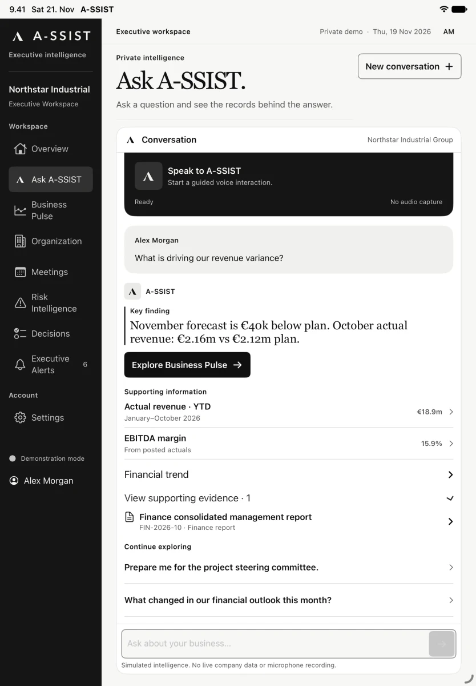
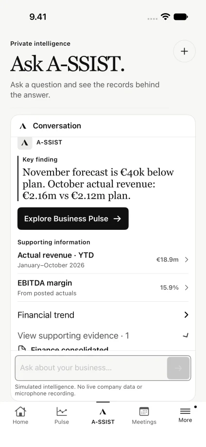
Native app screenshots from the Northstar demo. All data shown is illustrative.
How it works
From your business processes to A-SSIST
We first integrate AI into selected business processes. Once that system is in place, A-SSIST brings its findings into one app for executives.
-
Your business processes
Choose the workflows and data sources to connect.
- Procurement
- Operations
- Finance
-
AI in your workflows
The integrated system checks progress, flags exceptions and prepares briefings from connected data.
-
A-SSIST for executives
See what needs attention, review the findings and ask follow-up questions on iPhone or iPad.
01 / Executive overview
Start with what needs your attention.
- See the latest briefing. Review priorities, upcoming meetings and decisions in one place.
- Check in whenever you need to. A-SSIST uses the latest available information from connected company modules and respects your access rights.
02 / Organization
See who is working on what.
- Explore the org chart. See how teams fit together and who leads each department.
- Open a department brief. Review the team’s priorities and current tasks.
03 / Department conversations
Ask a question in the right context.
- Start from the department brief. Open Ask A-SSIST to begin a conversation about that team.
- Use the answer to follow up. Ask about a priority or an outstanding task before you speak with the team.
04 / Meeting preparation
Walk into the meeting prepared.
- Review the agenda. See which items need a discussion or a decision.
- Prepare your questions. Use the meeting brief to decide what to raise.
05 / Risks and follow-up
See which risks need action.
- Review the issue. See why it matters and which work it may affect.
- Check the next action. Use the risk brief to follow up with the responsible team.
06 / Business performance
Ask how the business is doing.
- Request a financial brief. Ask about performance using the company data you can access.
- Follow up on the figures. Check the information behind an answer before discussing it with your team.
A-SSIST / iPhone and iPad
See A-SSIST in action.
Request an executive demo and discuss which teams, modules and data sources to connect for your organization.
Request an Executive Demo a-ssist@nordiclabs.tech